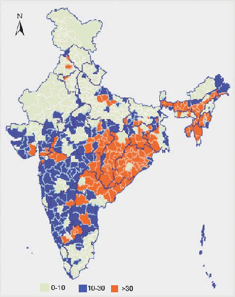

Malaria has been a problem in India for centuries. Details of this disease can be found even in the ancient Indian medical literature like the Atharva Veda and Charaka Samhita. In the 30’s there was no aspect of life in the country that was not affected by malaria. During the latter parts of nineteenth and early twentieth centuries, nearly one-fourth of India’s population suffered from malaria, particularly in the states like Punjab and Bengal.[1] The economic loss due to the loss of man-days due to malaria was estimated to be at Rs. 10,000 million per year in 1935.
At the time of independence in 1947, of a population of 330 million, about 75 million people were estimated to be infected with malaria every year, and the direct mortality due to the disease was estimated at 0.8 million per annum.To combat this menace, the Govt. of India launched the National Malaria Control Programme in April 1953. The programme proved highly successful and the number of malaria cases significantly declined to about 2 million by 1958. Encouraged by this, the programme was changed to a more ambitious National Malaria Eradication Programme in 1958. By 1961 the incidence dropped further to a mere 49151 cases, with no deaths.
But since then the programme suffered repeated set-backs due to technical, operational and administrative reasons and the cases started rising again.[3] Early setbacks in malaria eradication coincided with DDT shortages. Later in the 1960s and 1970s malaria resurgence was the result of technical, financial and operational problems. In the late 1960s malaria cases in urban areas started to multiply, and upsurge of malaria was widespread. As a result in 1976, 6.45 million cases were recorded by the National Malaria Eradication Programme (NMEP), highest since resurgence.
The implementation of urban malaria scheme (UMS) in 1971-72 and the modified plan of operation (MPO) in 1977 improved the malaria situation for 5-6 years. Malaria cases were reduced to about 2 million. The impact was mainly on vivax malaria. Easy availability of drugs under the MPO prevented deaths due to malaria and reduced morbidity. The P. falciparum containment programme (PfCP) launched in 1977 helped reduce falciparum malaria in the areas where the containment programme was operated but its general spread could not be contained. P. falciparum showed a steady upward trend during the 1970s and thereafter. Rising trend of malaria was facilitated by developments in various sectors to improve the national economy under successive 5 year plans.
Malaria, at one time a rural disease, diversified under the pressure of developments into various ecotypes. These ecotypes have been identified as forest malaria, urban malaria, rural malaria, industrial malaria, border malaria and migration malaria; the latter cutting across boundaries of various epidemiological types. Further, malaria in the 1990s has returned with new features not witnessed during the pre-eradication days. These are the vector resistance to insecticide(s); pronounced exophilic vector behaviour; extensive vector breeding grounds created principally by the water resource development projects, urbanization and industrialization; change in parasite formula in favour of P. falciparum; resistance in P. falciparum to chloroquine and other anti-malarial drugs; and human resistance to chemical control of vectors.
Proportion of P. falciparum distribution in India
According to the World Malaria Report 2014, 22% (275.5m) of India’s population live in high transmission (> 1 case per 1000 population) areas, 67% (838.9m) live in low transmission (0–1 cases per 1000 population) areas and 11% (137.7m) live in malaria-free (0 cases) areas. In 2013, 0.88 million cases have been recorded, with 128 million tests being conducted on the suspected cases, with P. falciparum causing 53% and P. vivax causing 47% of the infections. The incidence of malaria in India accounted for 58% of cases in the South East Asia Region of WHO.
At present, official figures for malaria in India, available at NVBDCP, indicate 0.7–1.6 million confirmed cases and 400-1,000 deaths annually.
{kind=link}
Study Contradicts NVBDCP and WHO Data: A study conducted by teams from the office of the Registrar General of India, Centre for Global Health Research at St Michael’s Hospital and University of Toronto, Canada, published in The Lancet on 20 November 2010 has reported that malaria causes 205 000 malaria deaths per year in India before age 70 years (55 000 in early childhood, 30 000 at ages 5—14 years, 120 000 at ages 15—69 years) with a 1.8% cumulative probability of death from malaria before age 70 years. The report says that 90 per cent of the deaths were recorded in rural areas, of which 86 per cent occurred at home without any medical attention. It also found that Orissa reported the highest number of deaths — 50,000, followed by Chhattisgarh, Jharkhand and Assam. The study, which began in 2002, covered 6,671 areas, each with about 200 households. However, WHO has rebutted these estimates
Yet other study on the global malaria mortality between 1980 and 2010 by Murray at al, published in The Lancet in Feb 2012, estimated the malaria mortality in India in 2010 at 46,800.
According to the estimates of a 16-member committee set up by the National Vector Borne Disease Control Programme (NVBDCP) to assess India’s actual malaria death burden, the total annual number of cases in India may be about 9.7 million, with about 30,014 – 48,660 deaths (40,297 on an average).
Another paper estimates the malaria burden in India at India at 180 million, with as many as 90 million cases of P. falciparum malaria per year.
{kind=link}
All Malaria and P. falciparum malaria Cases Reported from India from 1995-2007
{kind=link}
Map Showing High Risk Towns for Malaria in India
.jpg){kind=link}
{kind=link}
The biggest burden of malaria in India is borne by the most backward, poor and remote parts of the country, with >90-95% cases reported from rural areas and <5-10% from urban areas; however, the low malaria incidence in urban areas may be due to almost non-existing surveillance. The state of Orissa, with a population of 36.7 million (3.5%), contributes about 25% of the total annual malaria cases, more than 40% of P. falciparum malaria cases and nearly 20–30% of deaths caused by malaria in India, followed by Meghalaya, Mizoram, Maharashtra, Rajasthan, Gujarat, Karnataka, Goa, southern Madhya Pradesh, Chhattisgarh, and Jharkhand that also report significant number of malaria cases and deaths.[3,17] The proportion of P. vivax and P. falciparum varies in different parts of India; P. falciparum accounts for 30–90% of the infections in the forested areas inhabited by ethnic tribes and <10% of malaria cases in mostly indogangetic plains and northern hilly states, northwestern India, and southern Tamil Nadu.
Unbridled urbanization, drought, migration of workers, and lax control efforts are all contributing to the resurgence of malaria in India and the problem is expected to exacerbate in the years to come. With increasing global warming, it is projected that in 2050s, malaria is likely to persist in Orissa, West Bengal and southern parts of Assam, bordering north of West Bengal, but may shift from the central Indian region to the south western coastal states of Maharashtra, Karnataka and Kerala. Also the northern states, including Himachal Pradesh and Arunachal Pradesh, Nagaland, Manipur and Mizoram in the northeast may become malaria prone.
{kind=link}
Orissa, Chhattisgarh, West Bengal, Jharkhand and Karnataka contribute the most number of cases of malaria in India
Economic Burden: Sinton estimated a loss of Rupees 42 crores at 1935, based only on the financial loss in the community in terms of lost wages. In 1994, Shiv Lal and others estimated that, if there were no control activities and malaria was allowed to transmit from the 1947 level, there would have been an expenditure of Rupees 76,600 million (US$1,670 million) for medication, medical advise, hospitalization, and absenteeism. If the estimates of the Malaria Research Center, Delhi were taken into account for calculation of economic loss, the cost would have been Rupees 68,600 million (US$1,508 million) versus expenditures of Rupees 3,467.9 million (US$76.2 million) for control. Thus, the net savings due to malaria control was estimated at Rupees 65,132.1 million (US$1,431 million). These authors inferred that every Rupee invested in malaria control has produced a direct return of Rupees 19.70. The estimated man-days saved were 1,328.75 million per year.
Realising the difficulties in controlling/eradicating malaria, the National Malaria Eradication Programme has been now renamed as National Anti Malaria Programme.